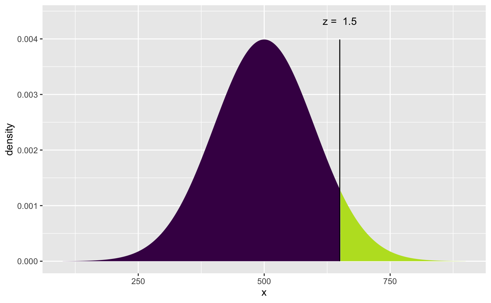
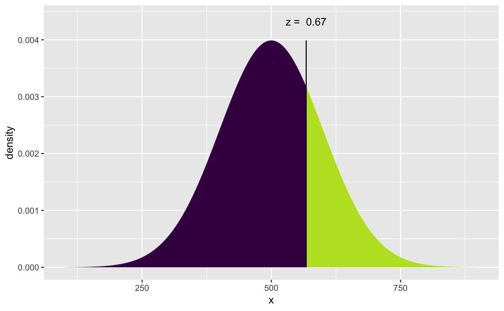
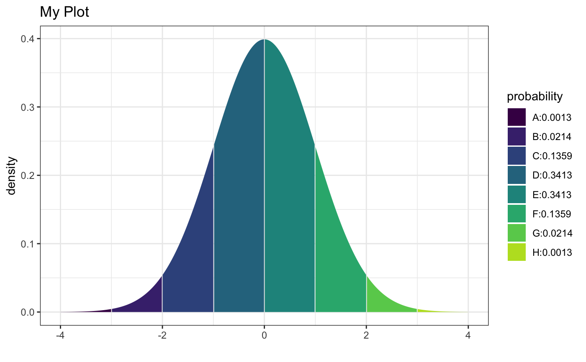

These functions behave similarly to the functions with the initial x
removed from their names but add more verbose output and graphics.
xpnorm(q, mean = 0, sd = 1, plot = TRUE, verbose = TRUE, invisible = FALSE, digits = 4, lower.tail = TRUE, log.p = FALSE, xlim = mean + c(-4, 4) * sd, ylim = c(0, 1.4 * dnorm(mean, mean, sd)), manipulate = FALSE, ..., return = c("value", "plot")) xqnorm(p, mean = 0, sd = 1, plot = TRUE, verbose = TRUE, digits = getOption("digits"), lower.tail = TRUE, log.p = FALSE, xlim, ylim, invisible = FALSE, ..., return = c("value", "plot"), pattern = c("stripes", "rings")) xcnorm(p, mean = 0, sd = 1, plot = TRUE, verbose = TRUE, digits = getOption("digits"), lower.tail = TRUE, log.p = FALSE, xlim, ylim, invisible = FALSE, ..., return = c("value", "plot"), pattern = "rings")
| q | quantile |
|---|---|
| mean, sd | parameters of normal distribution. |
| plot | logical. If TRUE, show an illustrative plot. |
| verbose | logical. If TRUE, display verbose output. |
| invisible | logical. If TRUE, return value invisibly. |
| digits | number of digits to display in output. |
| lower.tail | logical. If FALSE, use upper tail probabilities. |
| log.p | logical. If TRUE, uses the log of probabilities. |
| xlim, ylim | limits for plotting. |
| manipulate | logical. If TRUE and in RStudio, then sliders are added for interactivity. |
| … | additional arguments. |
| return | If |
| p | probability |
| pattern | One of |
histogram(),
chisq.test(),
pnorm(),
qnorm(),
qqmath(), and
plot().
xpnorm(650, 500, 100)#>#>#>#>#>#> [1] 0.9331928xqnorm(.75, 500, 100)#>#>#>#>#>#> [1] 567.449xpnorm(-3:3, return = "plot", system = "gg") %>% gf_labs(title = "My Plot", x = "") %>% gf_theme(theme_bw())#>#>#>#>#># NOT RUN { if (rstudio_is_available() & require(manipulate)) { manipulate(xpnorm(score, 500, 100, verbose = verbose), score = slider(200, 800), verbose = checkbox(TRUE, label = "Verbose Output") ) } # }